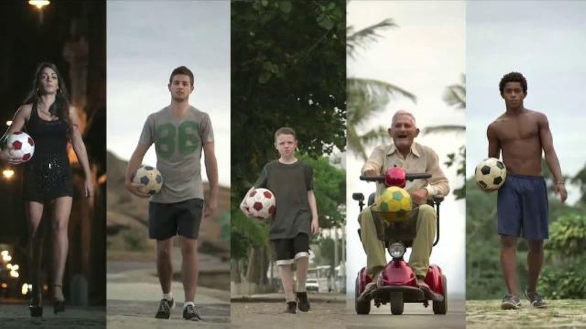

案例发生了什么

让孩子、老人、上班族和穿高跟鞋的女性完成跨街道、钟楼、扶梯和船只的不可思议射门，同时把世界杯薯条盒变成可扫描的增强现实足球游戏。
全球技巧影片负责吸引注意；艺术家设计世界杯薯条包装；手机扫描包装进入 GOL! 增强现实游戏；门店与餐桌成为低门槛参与场。
MARKETING KNOWLEDGE ROUTER · 营销知识路由器
营销启发卡
把历届经典的记忆点、商业结构和迁移方法放在同一层阅读。 卡片底部按主题连接全站相关案例、经典方法与深度文章。
核心动作
“我也能踢”的参与感、技巧奇观与看完想尝试的快乐；足球沿城市设施连续反弹后入网，以及能在薯条盒上踢球的手机游戏。
传播与商业机制
麦当劳不需要证明自己懂战术，它把足球变成人人都能玩的日常快乐，并让薯条盒直接成为游戏入口；全球技巧影片负责吸引注意；艺术家设计世界杯薯条包装；手机扫描包装进入 GOL! 增强现实游戏；门店与餐桌成为低门槛参与场。
可复用的方法
官方赞助不应只露标；把一次性包装变成互动介质，可以把观看、到店、产品和游戏串成同一个动作。
适用条件、风险与证据
- 特技镜头需明确娱乐属性，避免诱导危险模仿；增强现实体验还取决于设备兼容、下载门槛和门店执行。
- 后续复盘还应补齐发布主体、时间线、真实执行图、媒介范围和结果口径；没有这些证据时，不把行业评价或赛事总热度写成品牌增量。
资料与来源
官方资料与原始来源
市场 / 权益
全球
FIFA 世界杯官方赞助商
创意打法
素人奇观型；产品包装互动型；技巧挑战型
- 麦当劳中国官网 · 2014-06-04麦当劳开启世界杯盛宴：限量薯条盒与 GOL! AR 游戏
- TIME · 2014-06-24World Cup Whimsy Captured in New McDonald’s Ad
- iSpot 广告留存 · 2014McDonald’s FIFA World Cup: GOL!
- YouTube · 2014本页真实案例图片主源
来源按品牌/官方发布、官方账号留存、权威媒体、获奖案例库分层记录；品牌与奖项自报结果不视作独立审计。